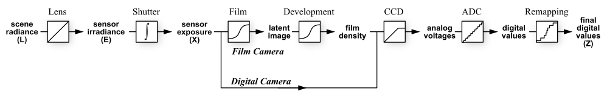

Introduction
In this project, we go through multiple steps to assemble an High Dynamic Rang Image.
All program in Matlab.
Requirment and what we done
Although the basic requirment is to assemble HDR in this project is just implement Paul Debevec's method, we have done some extra stuff:
- Image alignment using Ward's MTB algorithm.
- Other HDR creation methods: Robertson's method and RAW image recover
- Tone mapping using: Photographics Tone Reproduction for Digital Images
Taking photographs
We use Canon s95 to take a series of photo under different exposure. We save both .CR2 (RAW) and .JPG file. We use dcraw (http://www.cybercom.net/~dcoffin/dcraw/) to convert .CR2 file to 16-bit .TIFF file through command: “dcraw -4 -T”, which means “Write 16-bit, Don’t automatically brighten the image, Set custom gamma curve to (p=1, ts=1), Write TIFF instead of PPM ”
Then we use imread in matlab to read both .JPG and .TIFF file.
Also we use info = imfinfo(filename); info.DigitalCamera.ExposureTime to get the exposure time of .JPG and .TIFF images at runtime.
Image Alignment
Although we use tripod to take our photos, there are still observable shift between photos. We implement Ward’s Median Threshold Bitmap (MTB) algorithm to recover this shift.
MTB algorithm
According to algorithms, we:
- First, convert all pictures to grayscale.
- For each picture, compute the median of intensities among all pixels.
- For each picture, all pixels with intensities greater than it's median will be replaced with 1.
- For each picture, all pixels with intensities less than or equal to it's median will be replaced with 0.
Usage
Given two image I0 and I1, can be grey scale, RGB color sceme, uint8 or uint16 images.
Use matlab script getShift.m to align I1 to I0.
function [dx, dy, sI1] = getShift(I0, I1)
%%% dx: I1 should move dx pixel along x axis to align with I0.
%%% dy: I1 should move dy pixel along x axis to align with I0.
%%% sI1: shifted images of I1 after align to I0, will put 0 for empty area.
Result

What We learn
Assemble HDR Image
This flow chart shows how scene radiance becomes pixel values from both film and digital camera. Thus, to render the image back to high dynamic range, the calculation focus on transferring digital values Z to irradiance map E.
Debevec's method
In Debevec’s method, g functions for R,G,B channels are recovered by choosing a certain amount of pixels. Considering the change of these pixel values with exposure time(or reciprocal of shutter speed time), the response can be recovered. Once recovered, the irradiance map can be found by using the g functions.
So g functions can be obtained by solving for the below matrix:
Our system is build using MATLAB. To choose pixels, we use ginput to build a GUI for pixel selection. To solve for the g function, linear solver is used with operator “ \ ”.
Usage
matlab script devebecHDR.m is the main function for devebec’s method. In the script, getShift.m and gsolve.m function will be called to do alignment and g function solving. Once devebecHDR.m is operated, a window will pop up for pixel selection.
function HDR = devebecHDR(path) %%% path: the path of the folder where the image set is %%% HDR: the recovered irradiance map of the image set
Result
Take the test set---memorial as an example, if we choose these pixels
then we can get R,G,B channel response
With photographic tone mapping and Matlab tonemap, we can get the below result
photographic tone mapping
(only local operator)
photographic tone mapping
(global+ local operator)
Matlab tonemap
Tone mapping
After irradiance map is recovered, the dynamic range is too large for display. So, to produce an image available for printing, tone mapping needs to be done. Although we cannot keep the full range, the image can still be enhanced with visual match. In our project, we implement photographic tone reproduction method and compare it with tonemap in MATLAB.
Photographic Tone Reproduction
To adjust the luminance map, the background luminance is first calculated. Then every pixel is normalized with the background and a key-value.
In the paper of Reinhard, both global and local operator are proposed. However, global operators like
may still lose some details.
To achieve automatic dodging and burning, the algorithm suggests to adjust the luminance of each pixel with a moderate scale. By using the center-surround method, the contrast is measured by the difference of the luminance map convolving with center and surround kernels.If the contrast is under a certain threshold, the area is considered local and the moderate scale for each pixel is determined.Then the local dodging and burning operator can help enhanced the luminance and modify for lower dynamic range.
Usage
matlab script photoToneMap.m is called for the operation.
function LDR = photoToneMap(HDR) %%% HDR: the recovered irradiance map of the image set %%% LDR: the adjusted image for printing